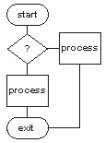

|

LinuxAsmTools |
NAME AsmTrace - trace execution of elf executable SYNOPSIS AsmTrace logs kernel functions and disassembly of x86 code to a file. Start and stop triggers are used to turn the trace output on and off. DESCRIPTION AsmTrace is primarialy for assembly language programmers and shows low level reguister information in hex. It uses tables to describe the output format and is easily extended. Initially it presents a menu to set triggers and amount of information logged. Output is stored to a file. USAGE asmtrace filename asmtrace -a filename asmtrace -f filename If filename is provided it is traced using defaults. For most operations the filename is left off. This starts asmtrace with a menu of optons. the "a" option attaches to running file the "f" option enable following forks, clones, and vforks. Running asmtrace with defaults will trace function names and provide a sequence number. The menu mode (no parameters initially) has options for additional information and triggers. Typically, large programs are traced with defaults first to find sequence numbers. Then areas of intrest can be traced in detail by using the sequence number to trigger a detailed trace. TRACE MENU OPTIONS attach - attaches to running process program to trace - name of program to trace output file - name of file to store trace information start seq - sequence number to start tracing start adr - address of function to start tracing start fun - function number to enable trace stop seq - sequence number to disable trace stop adr - address of function of disable trace stop fun - function number to disable trace show process - process number reporting control show address - execution address reporting control show sequence - sequence number reporting control show function - function name reporting control show registers - if functions reported, this adds registers show extras - extra data reporting show disassembly - report all instructions FILES If installed with test data, the /usr/share/doc/asmref/ directory contains sample programs for many kernel function. (see asmref) asmtrace does not need any support files, and is usually installed to /usr/bin. SEE ALSO asmmgr(1) asmref(1) asmedit(1) AUTHOR Jeff Owens <jko@bsn1.net> COPYRIGHT Copyright (C) 2007 Jeff Owens This program comes with absolutely NO WARRANTY |